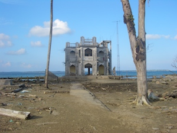

- Title Page
- Introduction
- The Islands and the Anthropologist
- Tsunami and First Response
- Wading In
- Second Tsunami
- In Search of Axes
- Steering a Sustainable Course
- Steering Committee
- Exchange Visit
- Nirnay Means Decision
- Up and Running
- Caritas Leans In
- Singh Sounds a Warning
- Midcourse Correction
- The SOPHIA Experiment
- Taking Stock
- SOPHIA Reports
Nirnay Means Decision
On one point, in fact, the Nicobarese were perfectly clear. They wanted to be in charge of decisions for the SIF projects. The delegation said, We don't like what the NGOs are doing, Singh remembers. We don't like what the government is doing. We have our own agenda. We want to have a self-rehabilitation. We know what we want and we need support for that.

Simron Singh
Tsunami damage
The social scientists on the committee embraced this view, but the financial managers were more cautious. Jasch refused to support any proposal not submitted in writing, and Altenburg, while in favor of participative decision making, was leery of leaving too much to the islanders. He wanted the Steering Committee to steer, not just advise; how else could unrealistic undertakings and corruption be prevented? [37] According to Haas, there was a lot of pushing and pulling in the committee room.
Haas on committee compromises
In the end, a compromise was reached. [38] The Nicobarese know best about their context, problems, and solutions, the Steering Committee said. [39] Therefore, they should have not only the last say, but also the first say ; in between, there could be give and take. A six-month trial partnership was launched with a commitment of 50,000. [40] If the trial period proved successful, the Nicobarese could count on another 190,000, perhaps more, over the next two and a half years. [41]
Under the trial agreement, the Tribal Council and the NYA would decide for themselves, in their customary councils, what projects to undertake and how much money to spend on them; those decisions, called nirnays , would then be relayed to Vienna for review and comment. [42] Upon acceptance of a nirnay, SIF would advance a portion of the funds requested and the NYA would begin the project work under the direction of Rasheed, the main project officer. Singh would lend support, as available, as would Venkat Ramanujam, Singhs field assistant and SIFs project administrator in the islands. Only minimal documentation would be required from the Nicobareseno formal proposal or budget, just an idea and a suggested appropriation; however, SIF would release no further funds until the first outlay was duly accounted for. In other words, funds would be advanced in good faith, with accounting to follow. In this way, the usual donor-directed approach to project management was turned on its head. It was Nicobarese self-determination, but with Austrian checks and balances.
Once the agreement was made, all tension between the Nicobarese and the Austrians dissipated. On the last evening there was drinking and dancing in the institutes library and, on September 25, the Nicobarese delegation returned to the islands, carrying high hopes and a cash advance on their sustainable future.
[37] Barth, Aftermath , and Lundberg interview with Matuschkowitz.
[38] Information for this section from the Minutes of the 2 nd and 3 rd SIF Steering Committee Meetings, September 12 and September 23, 2005, in SIF files, as well as from the Hass and Fischer-Kowalski interviews, unless otherwise noted.
[39] Marina Fischer-Kowalski, Simron Jit Singh, and Brigitte Vettori, SIF Brainstorming/Evaluation: Past Future Strategies, PowerPoint presentation to the 5th SIF Steering Committee Meeting, July 5, 2006, in SIF files.
[40] The 50,000 was taken not from the Neighbor in Need (NIN) account, but from monies contributed directly by Caritas and the institute, apparently because the advance nature of the grant would not meet NINs funding criteria.
[41] The remainder of the 400,000 fund would be spent on indirect costs or held in reserve.
[42] Nirnay is a Hindi word, and its use in this context was significant. Certain progressive Nicobarese, like Rasheed, like to tell the following story. Before the tsunami, the lieutenant governor of the Andaman and Nicobar Islands was a highly educated man whose formal Hindi was difficult for the Nicobarese to comprehend. Often when the islanders petitioned him for help, he would appear to agree but then summarily end discussions saying, I will do my best, but nirnay is in Delhi. The Nicobarese thought for years that Nirnay was some obstructionist tyrant intent on hindering development in the islands. They disliked this person Nirnay very much and often threatened to kill him if he ever came to the islands. Only later did they learn that nirnay simply means final decision or verdict, an official action taken by a higher authority, in this case, government officials in Delhi. By appropriating nirnay powers to themselves in the SIF projects, the Nicobarese delegation turned the tables on old hierarchies and put themselves firmly in charge of their own future.